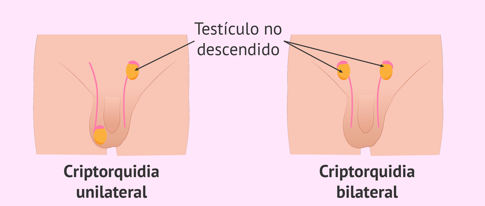

Criptoquiardia
Criptorquidia é um termo com origem grega que significa “testículo escondido” (cripto = escondido; orquis = testículo). Esta malformação caracteriza-se pela ausência de um ou ambos os testículos no saco escrotal devido a um qualquer evento durante o desenvolvimento fetal que impede a sua descida, desde a cavidade abdominal até ao saco escrotal. Há casos em que se verifica a inexistência do testículo, variante designada por agenesia testicular.
Quais são os fatores de risco para o desenvolvimento de criptorquidia?
Qualquer fator que interfira com o normal trajeto do testículo até à sua bolsa anatómica, seja ele ambiental, hormonal, hereditário, anatómico ou social. Os principais fatores de risco envolvidos podem verificar-se na fecundação, gravidez, parto e recém-nascido: Na fecundação: quando são usadas técnicas de reprodução medicamente assistida. Durante a gravidez: mãe e/ ou pai fumador(s), consumo de álcool por parte da mãe, Diabetes Mellitus e/ ou Hipertensão Arterial gestacional, entre outras intercorrências que comprometam o normal desenvolvimento do feto. No parto: prematuridade do recém-nascido e complicações durante este procedimento. No recém-nascido: alterações do peso à nascença, mal formações fetais detetadas após o parto e situações de predisposição genética, verificando-se um risco 4 a 6 vezes maior para um recém-nascido com um elemento na família afetado por esta malformação.
Quantas pessoas são afetadas?
A criptorquidia é o problema genital mais comum em idade pediátrica, afetando 1 a 2% dos recém-nascidos de termo entre os 3 e os 12 meses de vida, sendo mais frequente em crianças prematuras, podendo atingir 20% a 35%.
Como é feito o diagnóstico?
O diagnóstico de criptorquidia nem sempre é fácil. Pode-se dividir em dois grandes grupos: criptorquidia com testículo não palpável e criptorquidia com testículo palpável. No recém-nascido pode ser normal não se palparem os testículos aproximadamente até aos 6 meses de idade. Existem situações normais que podem contribuir para a sua subida, como a exposição ao frio e irritabilidade aumentada, sendo estes palpáveis durante o banho de água quente. O testículo retrátil é uma condição benigna e frequentemente bilateral, causada pelo reflexo cremastérico que puxa o testículo para o abdómen. Nos casos em que o testículo não é palpável de forma consistente podem ser realizados exames complementares de diagnóstico para uma melhor caracterização. Os testículos não palpáveis podem encontrar-se ao longo de todo o trajeto, desde a virilha até à cavidade abdominal. São mais difíceis de detetar na palpação, podendo em algumas situações verificar-se mesmo a ausência de formação testicular. Outra diferenciação importante é se a criptorquidia ocorre num ou nos 2 testículos, parecendo existir uma maior associação entre os casos em que os 2 testículos estão afetados e infertilidade após tratamento.
Quais os riscos e possíveis complicações?
O normal funcionamento dos testículos depende de uma temperatura ambiente mais baixa da verificada na cavidade abdominal havendo assim a sua migração para o saco escrotal (temperatura próxima dos 34ºC). Na criptorquidia, devido à localização testicular na zona da virilha ou na cavidade abdominal, o testículo está exposto a temperaturas mais elevadas, o que poderá levar à redução da fertilidade, risco aumentado para cancro testicular, maior probabilidade de torção testicular e traumatismo, além da possível perturbação psicológica relacionada com a imagem.
Quais as possibilidades de tratamento?
Uma das formas de abordagem consiste no tratamento hormonal com beta HCG. No entanto, tem taxas de sucesso máximas de 20%, sendo utilizado apenas em casos específicos. Atualmente a cirurgia é a melhor forma de intervenção na maioria dos casos de criptorquidia, sendo designada por orquidopexia (fixação do testículo). Se o testículo não concluiu a sua descida até aos 6 meses de idade, a cirurgia deve ser feita no espaço de um ano, até um máximo de 18 meses, apresentando taxas de sucesso de 92%.
Conclusão
A criptorquidia é uma malformação comum que, apesar de ter tratamento estabelecido, a longo termo continua a estar associada a consequências graves como cancro testicular e infertilidade masculina.